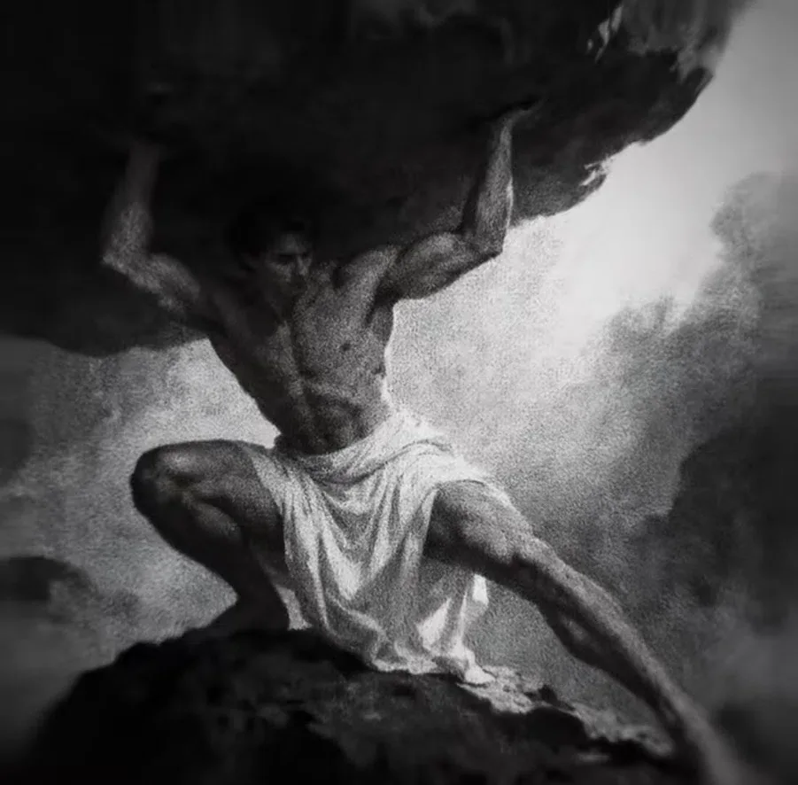

¿De qué sirve tener voluntad si no sabemos gobernarla?
05Ícaro
Aquello que no supimos escuchar.
La posibilidad de elevarse no suspende las condiciones que hacen posible el vuelo.
Hendrick Goltzius · Ícaro, 1588.
El relato.
En las Metamorfosis de Ovidio, Dédalo fabrica alas de plumas y cera para escapar de Creta con su hijo. Antes de partir, advierte a Ícaro que mantenga una altura intermedia: el agua amenaza las alas por abajo; el calor del sol, por arriba. La extraordinaria posibilidad del vuelo depende de ese cuidado.
Ícaro se entusiasma y asciende. La cera se ablanda, las plumas se desprenden y el joven cae al mar. Dédalo lo busca y después encuentra su cuerpo. La capacidad que hizo posible la salida no evitó la muerte del hijo.
El desenlace. Ícaro muere. Dédalo sobrevive para lamentarlo; no hay un segundo vuelo del joven que repare el desenlace.
UNA LECTURA CONTEMPORÁNEA
Poder hacer algo no basta para saber hacerlo.
Sería fácil rescatar solo el gesto de atreverse. Pero entonces desaparecería la advertencia que organiza la tragedia. El vuelo es una conquista técnica y una experiencia de libertad; también es una práctica sostenida por materiales frágiles. La confianza pierde precisión cuando deja de escuchar esas condiciones.
Nuestra lectura no exige obedecer cualquier límite por el hecho de que exista. Algunos límites protegen; otros mantienen privilegios. Discernir pide preguntar de dónde proceden, qué evidencia los sostiene y qué sucede al ignorarlos. La prudencia no consiste en reducir todo deseo: consiste en responsabilizarse de la relación entre deseo y consecuencia.
Una ambición puede ampliar la vida sin necesitar que cada advertencia parezca cobardía. Escuchar a tiempo, revisar una decisión o admitir que todavía no sabemos algo preserva posibilidades futuras. La tragedia de Ícaro no condena toda aspiración. Muestra el precio de separar una capacidad de las condiciones que la sostienen.
El cielo permite elevarse. También puede dejar de sostenernos.
La libertad no borra la dependencia. Hasta un movimiento que parece romper todas las fronteras necesita un cuerpo, una técnica y un entorno. Gobernar la voluntad empieza por no tratarlos como obstáculos irrelevantes.
Fuentes y obra
Ovidio, Metamorfosis VIII, 183–235. La lectura sobre capacidad y prudencia es contemporánea; no altera el carácter trágico del episodio.
Sobre la imagen. Hendrick Goltzius, Ícaro, de Los cuatro deshonrados, 1588. The Metropolitan Museum of Art, dominio público. El grabado representa la caída. Ver la obra (abre otra pestaña)
¿Y si el mismo cielo que invita a volar se convierte en una carga de la que no podemos separarnos?
En Ícaro, el cielo abre una posibilidad. En Atlas, se convierte en aquello que no puede dejar de sostenerse.
06Atlas
La prisión de ser indispensable.
La fuerza no es lo mismo que la libertad de decidir qué sostener.

Imagen simbólica de la carga.
El relato.
En la Teogonía de Hesíodo, Atlas sostiene el ancho cielo por imposición de Zeus. Lo que carga es la bóveda celeste, no el planeta Tierra. La imagen habitual de un cuerpo bajo una esfera puede ocultar que esa fuerza está sometida a una obligación.
La Biblioteca atribuida a Apolodoro cuenta un relevo breve: Heracles sostiene el cielo mientras Atlas busca las manzanas de las Hespérides. Atlas intenta dejarle la tarea, pero Heracles consigue que la retome. El intercambio no termina con Atlas liberado.
El desenlace. El relevo se interrumpe y Atlas vuelve a sostener el cielo. En esta versión no elige de nuevo la condena como si fuera una vocación.
UNA LECTURA CONTEMPORÁNEA
Una carga impuesta no se vuelve elegida por resistirla.
Admirar la fuerza de Atlas sin mirar su falta de libertad transforma una condena en un ideal. Nuestra reflexión empieza donde esa admiración se detiene: no basta con preguntar cuánto aguanta alguien; también hay que preguntar por qué no puede dejar de hacerlo y quién ha decidido que le corresponda.
En la vida común, algunas responsabilidades se asumen por afecto o convicción. Otras nacen de expectativas que nunca hemos podido discutir. Ambas pueden agotarnos, pero no significan lo mismo. Reconocer esa diferencia permite hablar de límites, distribución y apoyo sin reducir el cuidado a una prueba privada de fortaleza.
No siempre es posible soltar una carga de inmediato. Hay dependencias reales y condiciones materiales que no desaparecen por nombrarlas. Elegir un límite puede comenzar por renegociar una parte, hacer visible un trabajo o permitir que otra persona participe. Nuestra lectura propone esas posibilidades sin adjudicárselas al Atlas del relato.
Ícaro tiene movimiento sin medida. Atlas tiene fuerza sin salida.
La forja no consiste en fabricar una voluntad incapaz de detenerse. Consiste en distinguir la capacidad que queremos desarrollar de la obligación que nos impide elegir. El carácter también se forma cuando revisamos una carga.
Fuentes y obra
Hesíodo, Teogonía, 517–520; Pseudo-Apolodoro, Biblioteca II, 5.11. Se distingue el cielo del globo terrestre y el relevo temporal de una liberación.
Sobre la imagen. Imagen simbólica de una carga, heredada de la HOME. No es una representación histórica verificada de Atlas ni de la esfera celeste. Atribución pendiente.
Si pudiéramos elegir, ¿qué sostendríamos sin necesitar que nos lo impusieran?